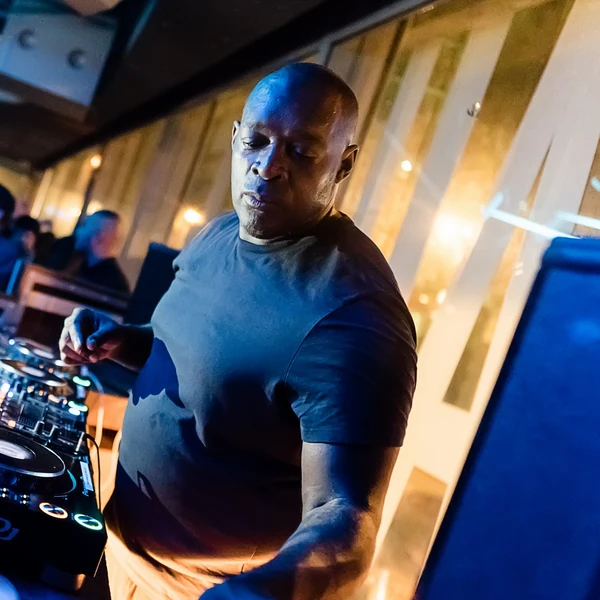
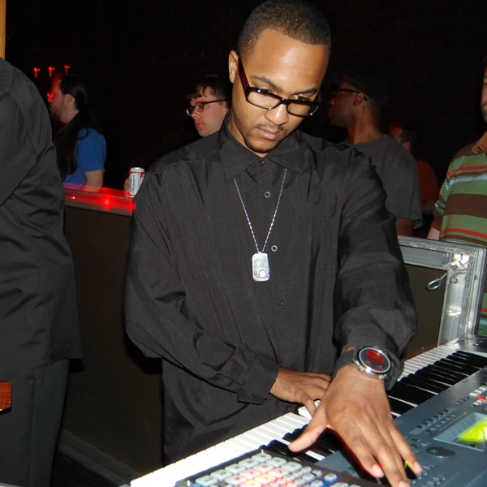
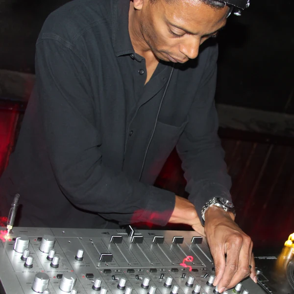
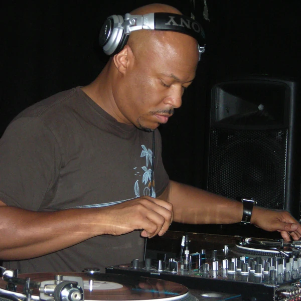
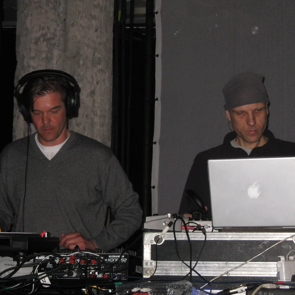

Techno is a form of Electronic Dance Music that developed among Black musicians in and around Detroit during the 1980s. It is made primarily with electronic instruments and production equipment, using programmed rhythms and manipulated sounds to build a track. A regular kick drum is common, but Techno is not defined by one exact drum pattern or tempo. The music often develops through repetition, with gradual changes to the rhythm and texture taking the place of conventional verses and choruses. Vocals can appear, although many tracks are largely instrumental. Early Techno grew out of an exchange between American dance music and electronic ideas from Europe and elsewhere. As it spread internationally, producers developed harder, faster, more minimal and more atmospheric approaches. That variety can make the genre difficult to pin down from a short description. The main connection is an interest in what electronic rhythm can do when it becomes the central element of the music rather than an accompaniment to a song.
Techno takes its name from technology, which suited a style built around electronic machines and ideas about the future. The word was already being used in different musical contexts before it became a settled genre name. Detroit producers had begun using it themselves during the 1980s, while the British music industry helped establish it as an international category towards the end of that decade. The label distinguished Detroit's developing sound from Chicago House, even though the two scenes influenced one another and were not always easy to separate. Techno later became a convenient shorthand for almost any electronic dance music in parts of the mainstream press. That made life simpler for people writing headlines, but rather less helpful for anyone trying to understand the actual music. Within club culture, Techno usually refers more specifically to the tradition that began in Detroit and the many related styles that developed from it.
Techno developed during the early 1980s through the experiments of young Black producers in and around Detroit. They drew on Funk and other American dance music while taking a keen interest in European electronic sounds, synthesisers and science fiction. Instead of treating machines as substitutes for a conventional band, they explored the new kinds of rhythm and texture those machines could produce. Local radio, parties and independent labels helped this music reach listeners beyond the people making it. By the end of the decade, Detroit Techno was finding an enthusiastic audience in Britain and continental Europe. German reunification later provided an unexpected setting for its growth, as clubs occupied disused spaces in Berlin and established a lasting connection with Detroit producers. Meanwhile, the American scene continued developing its own approaches, including music that was more minimal or openly political. Affordable digital production brought new people into the genre, while global festivals gave it a scale its early makers could hardly have expected. The story did not end when the music left Detroit, but neither did Detroit stop being part of it.
Techno often starts with a repeating electronic rhythm and builds the rest of the track around it. A kick drum may mark each beat, with percussion and bass sounds creating patterns that gradually change as the music continues. The changes can be quite small. A producer might alter the tone of a drum, introduce a short sequence or let an echo continue after the original sound has disappeared. That attention to texture is one reason Techno does not always need a prominent melody or a vocal to hold interest. Tracks are frequently designed for DJs to mix together, so they may begin or end with extended rhythmic passages. Some forms are sparse enough that a tiny change in the percussion becomes noticeable, while others fill the space with dense sounds and heavy distortion. Techno is sometimes described as cold or mechanical, but that says more about the equipment than how the music is experienced. The rhythm can be as flexible and expressive as the producers choose to make it.





Techno's origins in Black Detroit matter because its later international reputation has not always reflected that history. The genre developed through independent labels, clubs and a strong culture of learning how to work with equipment without waiting for the established industry to offer an invitation. Some Detroit producers also used futuristic ideas and political messages to challenge assumptions about whose future technology was supposed to serve. In Europe, Techno became associated with new spaces for nightlife, particularly in Berlin after reunification, where unused buildings offered room for clubs and different social communities to meet. These scenes helped establish electronic dance music as something that could exist outside traditional concert venues and record company structures. Yet as Techno grew into a global business, its Black American origins were sometimes pushed into the background of a story told mainly through European clubs and festivals. Credit, it seems, does not always travel as efficiently as music. Techno continues to support independent communities and new approaches to production, but recognising its history is part of understanding what those communities inherited.